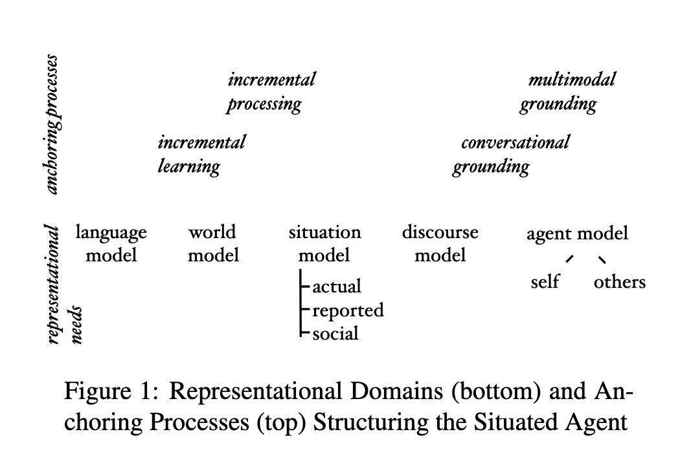
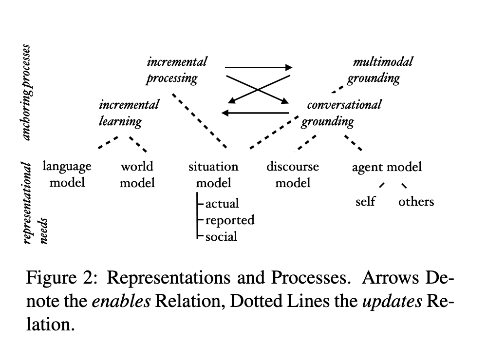

What A Situated Language-Using Agent Must be Able to Do: A Top-Down Analysis
Abstract
Even in our increasingly text-intensive times, the primary site of language use is situated, co-present interaction. It is primary ontogenetically and phylogenetically, and it is arguably also still primary in negotiating everyday social situations. Situated interaction is also the final frontier of Natural Language Processing, where, compared to the area of text processing, very little progress has been made in the past decade, and where a myriad of practical applications is waiting to be unlocked. While the usual approach in the field is to reach, bottom-up, for the ever next “adjacent possible”, in this paper I attempt a top-down analysis of what the demands are that unrestricted situated interaction makes on the participating agent, and suggest ways in which this analysis can structure computational models and research on them. Specifically, I discuss representational demands (the building up and application of world model, language model, situation model, discourse model, and agent model) and what I call anchoring processes (incremental processing, incremental learning, conversational grounding, multimodal grounding) that bind the agent to the here, now, and us.

Here is a (very) high-level, general characterisation of the face-to-face interaction situation: It is a di- rect, purposeful encounter of free and independent, but similar agents. (p. 2)
• as agents, the participants meet their purposes— and here, specifically, communicative purposes— through acting; (p. 2)
• as free agents, they cannot be forced, and can- not force the respective other, to do anything, and specifically not to understand as intended; (p. 2)
• as independent agents, they are individually sub- ject to the same passing of time (while one acts, the other can as well and need not wait); they will also have different histories, including their histories of previous interactions and language use, and will bring different knowledge to the interaction; (p. 2)
• this being a direct encounter, the agents must rely on what they can do (produce for the other, receive from the other) with their bodies to create meaning here and now; (p. 2)
• finally, as fundamentally similar agents, they can rely on a certain body of shared knowledge and experience, for example in how each parses the shared environment, understands the world, and forms desires, beliefs, and intentions, and, if they are to use language for communication, in how they use language, but where the exact degree of similarity will need to be determined during and through the interaction. (p. 2)
It is not enough for the agent to be able to produce well-formed strings; rather, the systematic connection to the communicative intentions they express (Grice, 1957) must be modelled as well. (p. 2)
The proposed schema splits the situation model into three sub-types: A model of the actual situation in which the interaction is happening (p. 2)
reported situation (p. 3)
social situation (p. 3)
Next, the discourse model, required to keep track of antecedents of anaphoric acts and, more generally, for the determination of coherence. (p. 3)
Finally, there is a large body of work elucidat- ing the role of the agent model (representing their beliefs, desires, and intentions) in interpreting dis- course (Cohen et al., 1990). (p. 3)

The fact that the agents are independent and hence not extrinsically temporally coordinated ar- gues for incremental processing, that is, an updat- ing of situation, discourse and agent models that is continual to the observation of the other agent’s actions as well as to the agent’s own production— this is turn then makes possible the achievement of coordination, for example in successful turn-taking (Schlangen and Skantze, 2009). (p. 3)
Now, tackling a problem by focussing on its parts is a valid strategy, but only if in doing so the whole is kept in mind. In the cases cited above, it seems fair to say that the formulation of the task was driven more by the available modelling method: They basically are tasks that lend themselves to a formulation as sequence-to-sequence problem, and as such are more about transducing the semantics of the stimulus language than they are about situated interaction (or interaction at all). (p. 4)
but in order to systematise these efforts, what is missing is a clearer picture of how the task setting (environment, interaction mode, etc.) determines what a task can even test, and how close it will come to the fuller picture sketched above. (p. 4)
If NLP wants to advance on this phenomenon, I contend, it needs to start to take its complexity seriously, and devise methods and testbeds for tackling it, rather than only invent tasks that fit the available methods. (p. 4)
@article{Schlangen_2023, title={What A Situated Language-Using Agent Must be Able to Do: A Top-Down Analysis}, url={[http://arxiv.org/abs/2302.08590](http://arxiv.org/abs/2302.08590)}, DOI={[10.48550/arXiv.2302.08590](https://doi.org/10.48550/arXiv.2302.08590)}, abstractNote={Even in our increasingly text-intensive times, the primary site of language use is situated, co-present interaction. It is primary ontogenetically and phylogenetically, and it is arguably also still primary in negotiating everyday social situations. Situated interaction is also the final frontier of Natural Language Processing, where, compared to the area of text processing, very little progress has been made in the past decade, and where a myriad of practical applications is waiting to be unlocked. While the usual approach in the field is to reach, bottom-up, for the ever next “adjacent possible”, in this paper I attempt a top-down analysis of what the demands are that unrestricted situated interaction makes on the participating agent, and suggest ways in which this analysis can structure computational models and research on them. Specifically, I discuss representational demands (the building up and application of world model, language model, situation model, discourse model, and agent model) and what I call anchoring processes (incremental processing, incremental learning, conversational grounding, multimodal grounding) that bind the agent to the here, now, and us.}, note={arXiv:2302.08590 [cs]}, number={arXiv:2302.08590}, publisher={arXiv}, author={Schlangen, David}, year={2023}, month=feb }